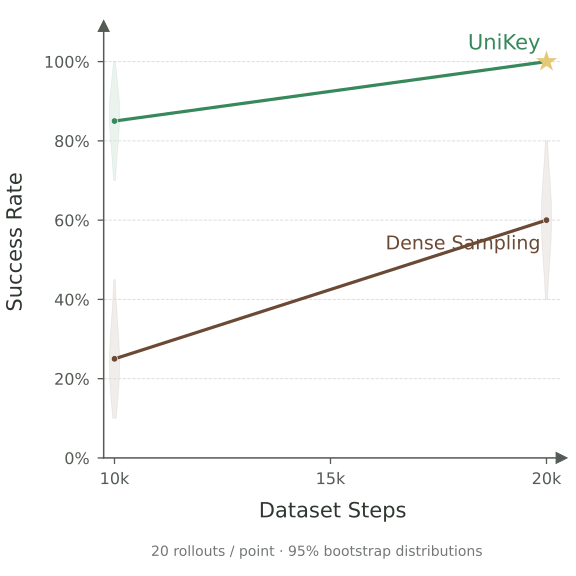

Hang Mug
UniKey: 18 checkpoints · Dense Sampling: 39 checkpoints


Simulation and real-world records are kept separate. CSV denominators are declared by the source plot, not independently counted from raw episodes.
Simulation results from robo02. Both methods use solid lines; every available checkpoint is retained.
Extracted 2026-10-28T17:20:56.624661+00:00. Pale shapes show central 95% empirical bootstrap distributions, separate from variation across training seeds.
Statistics JSONSummary JSONSource files and hashesFour-task overview
UniKey: 18 checkpoints · Dense Sampling: 39 checkpoints
Simulation and real-world records are kept separate. CSV denominators are declared by the source plot, not independently counted from raw episodes.
UniKey: 0 checkpoints · Dense Sampling: 0 checkpoints

No ACT success-rate evaluation records were found in the requested robo02 task directory.
UniKey: 18 checkpoints · Dense Sampling: 1 checkpoints

Dense Sampling has only one available evaluation (5,000 dataset steps). No later checkpoints are inferred.
Additional temporary base/finetuned comparisons are extracted separately. They have no dataset-budget labels and are not combined with the v20 learning curve.
Separate base/finetuned evaluations:
| Experiment | Policy | Successes | Rate |
|---|---|---|---|
| tmp_flip_then_arrange_shoe | base | 90/100 | 90% |
| tmp_flip_then_arrange_shoe | finetuned | 92/100 | 92% |
| tmp_flip_then_arrange_shoe_298 | base | 95/100 | 95% |
| tmp_flip_then_arrange_shoe_298 | finetuned | 97/100 | 97% |
UniKey: 15 checkpoints · Dense Sampling: 15 checkpoints

The dense-sampling rollout directory at 5k is empty; 21k contains a checkpoint but no evaluation. Both are excluded from the curves.
The four reported real-world evaluations are plotted separately from simulation.
